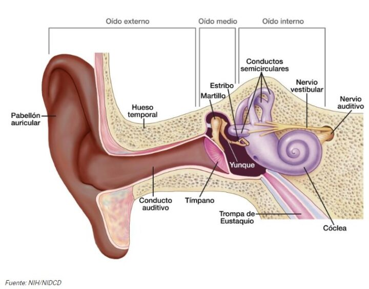

El Oído, Infrasonido y Ultrasonido
Descubriendo los límites de nuestra percepción acústica y la maravilla de la audición humana.
1. El Oído Humano y la Audición
El oído es un órgano extraordinariamente complejo y sensible. Su función principal no es solo "escuchar", sino transformar la energía mecánica (ondas de presión en el aire) en impulsos eléctricos (energía bioeléctrica) que nuestro cerebro puede interpretar como voces, música o ruido.

Paso a Paso: ¿Cómo escuchamos?
La conversión de una onda mecánica a un impulso nervioso ocurre a través de un viaje fascinante por tres secciones de nuestro oído:
2. La Escala Humana y la Frecuencia (Sintonía)
Para entender el infrasonido y ultrasonido, primero debemos conocer nuestros propios límites. Nuestro oído es como un radio que solo puede captar ciertas "emisoras". Esta sintonía se mide en Hertz (Hz), que es el número de vibraciones por segundo (Frecuencia).
- El Rango Audible: Va desde los 20 Hz (sonidos supremamente graves, lentos) hasta los 20,000 Hz (sonidos supremamente agudos, rápidos).
- Si una onda mecánica vibra menos de 20 veces por segundo, o más de 20,000 veces, los humanos somos biológicamente sordos a ella. Sin embargo, que no la escuchemos no significa que no exista ni que no tenga energía.
3. El Infrasonido (Vibraciones Lentas y Gigantes)
¿Qué es?: Son ondas sonoras con una frecuencia menor a 20 Hz. Se caracterizan por ser ondas de gran longitud, lentas y pesadas. Al ser tan grandes, tienen la asombrosa capacidad de viajar decenas o cientos de kilómetros sin perder energía, atravesando obstáculos gigantescos como montañas, bosques densos e incluso paredes sólidas gruesas.
Ejemplos en la Naturaleza y Animales:
- Elefantes: Pueden generar fuertes infrasonidos con sus cuerdas vocales que viajan por el suelo. Lo usan para comunicarse con sus manadas a varios kilómetros de distancia en la sabana africana.
- Ballenas y Rinocerontes: Utilizan cantos en baja frecuencia que viajan enormes distancias a través del océano o la tierra.
- Eventos Geológicos: La naturaleza genera infrasonido masivo durante terremotos, erupciones volcánicas, avalanchas, meteoritos entrando a la atmósfera y tornados.
Aplicaciones y Usos Humanos:
- Sismología: Monitoreo de actividad sísmica y volcánica. Las estaciones de detección escuchan el "rugido" de la Tierra antes de que ocurra una erupción.
- Seguridad Global: Redes internacionales de sensores infrasónicos vigilan secretamente las explosiones nucleares subterráneas.
4. El Ultrasonido (Vibraciones Rápidas y Diminutas)
¿Qué es?: Son ondas sonoras con una frecuencia mayor a 20,000 Hz. Al vibrar tan rápido, las ondas son extremadamente cortas y "finas". Esta cualidad es su mayor ventaja: debido a su pequeñez, no rodean los obstáculos, sino que rebotan en ellos (reflexión acústica). Esto las hace perfectas para "ver" a través del sonido, ofreciendo una alta resolución para detectar objetos diminutos o texturas.
Ejemplos en la Naturaleza y Animales:
- Murciélagos y Delfines: Utilizan la ecolocalización. Emiten chillidos ultrasónicos rápidos y escuchan el eco cuando rebota en insectos en el aire o peces en el agua. Esto les permite cazar en la oscuridad total.
- Perros y Gatos: Pueden escuchar frecuencias de hasta 45,000 Hz (perros) o 64,000 Hz (gatos). Por eso los perros responden a "silbatos silenciosos" que los humanos no pueden oír.
Aplicaciones y Usos Humanos:
- Medicina (Ecografías): Un transductor emite vibraciones ultrasónicas en el cuerpo. Las ondas rebotan en los órganos o en el bebé dentro del vientre materno y regresan al sensor, que las convierte en una imagen médica. No utiliza radiación peligrosa.
- Industria (Limpieza y Detección): Máquinas que envían ultrasonido a través de líquidos para limpiar joyas u ópticas a nivel microscópico, o radares industriales (sonar) para encontrar grietas ocultas en tuberías metálicas o estructuras aeronáuticas.